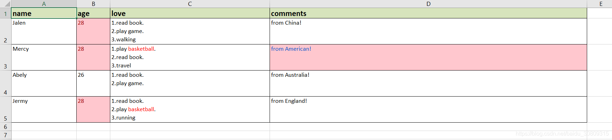

# 需求
（1）导出数据 age 列如果大于 27，设置背景色并且字体红色
（2）导出数据 love 列如果包含关键字 basketball，设置字体为红色
（3）导出数据 comments 列如果包含关键字 American，设置背景色，字体为蓝色
# 要求效果

# 代码
import re | |
import pandas as pd | |
def export_ms_excel(): | |
data = [{'name': 'Jalen', | |
'age': 28, | |
'love': '1.read book.<br>2.play game.<br>3.walking', | |
'comments': 'from China!'}, | |
{'name': 'Mercy', | |
'age': 28, | |
'love': '1.play <span style="color:red">basketball</span>.<br>2.read book.<br>3.travel', | |
'comments': 'from American!'}, | |
{'name': 'Abely', | |
'age': 26, | |
'love': '1.read book.<br>2.play game.', | |
'comments': 'from Australia!'}, | |
{'name': 'Jermy', | |
'age': 28, | |
'love': '1.read book.<br>2.play <span style="color:red">basketball</span>.<br>3.running', | |
'comments': 'from England!'}] | |
df = pd.DataFrame(data) | |
df = df[['name', 'age', 'love', 'comments']] | |
# 1. to html | |
pd.set_option("display.max_colwidth", 1000, 'display.width', 1000) | |
table_html = df.to_html(index=False, border=1, justify='center', na_rep="", escape=False) | |
table_html = table_html.replace('class', 'cellspacing=\"0\" class') | |
with open('demo.html', 'w') as fo: | |
fo.write(table_html) | |
# 2. to excel | |
df['love'] = df.apply(lambda x: x['love'].replace('<br>', '\n'), axis=1) | |
writer = pd.ExcelWriter('demo.xlsx', engine='xlsxwriter') | |
df.to_excel(writer, index=False, sheet_name='sheet') | |
workbook = writer.book | |
# set excel header format | |
header_fmt = workbook.add_format({ | |
'font_size': 14, | |
'bold': True, | |
'fg_color': '#D7E4BC', | |
'border': 1, | |
'text_wrap': True | |
}) | |
sheet_table = writer.sheets['sheet'] | |
for col_num, value in enumerate(df.columns.values): | |
sheet_table.write(0, col_num, value, header_fmt) | |
# set excel column width | |
sheet_table.set_column('A:A', 20) | |
sheet_table.set_column('B:B', 10) | |
sheet_table.set_column('C:C', 50) | |
sheet_table.set_column('D:D', 100) | |
# set new line for cell in 'love' column | |
wrap_format = workbook.add_format({'text_wrap': True, 'align': 'left', 'valign': 'top'}) | |
for row_num, value in enumerate(df.index.values): | |
sheet_table.set_row(row_num + 1, 45, cell_format=wrap_format) | |
# set red color if cell in 'love' column contain 'basketball' | |
red_format = workbook.add_format({'color': 'red'}) | |
pattern = '.*<span.*>(.*)</span>.*' | |
data_list = df.to_dict(orient='records') | |
j = 1 | |
for data in data_list: | |
name = data['name'] | |
age = data['age'] | |
love = data['love'] | |
sheet_table.write(j, 0, name) | |
sheet_table.write(j, 1, age) | |
deal_cell_words(j, 2, love, red_format, pattern, sheet_table) | |
j += 1 | |
# set conditional format for 'age' | |
age_format = workbook.add_format({'bg_color': '#FFC7CE', 'font_color': '#9C0006'}) | |
sheet_table.conditional_format(1, 1, len(df), 1, | |
{'type': 'cell', | |
'criteria': '>', | |
'value': 27, | |
'format': age_format}) | |
# set conditional format for 'comments' | |
comments_format = workbook.add_format({'bg_color': '#FFC7CE', 'font_color': '#0052CC'}) | |
sheet_table.conditional_format(1, 3, len(df), 3, | |
{'type': 'text', | |
'criteria': 'containing', | |
'value': 'American', | |
'format': comments_format}) | |
# set border | |
border_fmt = workbook.add_format({'bottom': 1, 'top': 1, 'left': 1, 'right': 1}) | |
sheet_table.conditional_format(0, 0, len(df), len(df.columns) - 1, | |
{'type': 'no_errors', 'format': border_fmt}) | |
workbook.close() | |
writer.close() | |
writer.save() | |
def deal_cell_words(row, column, phrase, red, pattern, worksheet): | |
red_keywords = re.findall(pattern, phrase) | |
if red_keywords: | |
text = phrase.replace('<span style="color:red">', '**').replace('</span>', '**') | |
li = [i for i in text.split('**') if i != ''] | |
new_li = [row, column] | |
for j in range(len(li)): | |
if li[j] in red_keywords: | |
new_li.append(red) | |
new_li.append(li[j]) | |
worksheet.write_rich_string(*new_li) | |
else: | |
worksheet.write(row, column, phrase) | |
if __name__ == '__main__': | |
export_ms_excel() |
# 参考
单元格内字符串换行问题：
https://stackoverflow.com/questions/41231930/pandas-excel-any-way-to-encode-the-alt-enter-char10-line-break-into-data-wh
上下左右对齐align问题：
https://github.com/pandas-dev/pandas/issues/30107
https://stackoverflow.com/questions/41364380/pandas-dataframe-to-excel-vertical-alignment-of-index
单元格颜色标红问题：
https://blog.csdn.net/Miss_Audrey/article/details/105952197
根据条件设置某列某个单元格特殊颜色：
https://stackoverflow.com/questions/57997345/how-to-color-text-in-a-cell-containing-a-specific-string-using-pandas
https://stackoverflow.com/questions/54109548/how-to-save-pandas-to-excel-with-different-colors
设置单元格border
https://stackoverflow.com/questions/55928797/python-excelwriter-formatting-all-borders